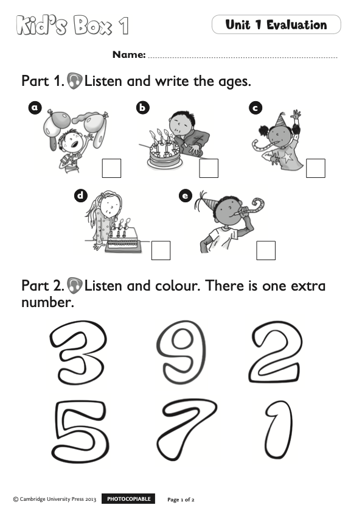

Stage 3 · Reading · step 1 of 7
Revise A a · B b — and the homework 📖
All together: "a… a… a… apple!" 🍏 · "ba… ba… ba… bag!" 👜
Homework check — the Bb worksheet: worksheets up! 👏

Point: "bag… bat… the b-maze — who finished it all?"
PREPARE AHEAD
Kid's Box 1 tests.pdf; the scans are dark — gray print helps)🎬 Play — everybody sings!
After the song: "How are you today?" — 2–3 children answer.
📝 Worksheets out. You say — they colour:
"Color the star number three — red!" · "Number seven — green!"
Continue: "Number one — blue! Number five — orange!"
Board: a child taps the star you named — it fills — the class checks.
All together: "a… a… a… apple!" 🍏 · "ba… ba… ba… bag!" 👜
Homework check — the Bb worksheet: worksheets up! 👏
Point: "bag… bat… the b-maze — who finished it all?"
R-rat! 🐁 · R-red! 🔴 · R-rug! (a carpet) · R-rag! (an old cloth)
Clap the rhythm: "R-r-rat! 👏 R-r-red! 👏 R-r-rug! 👏 R-r-rag! 👏"
Board: tap a card — the word shows.
1. Listen and circle: "Circle the big R!… Now the small r!"
2. Match: scribble → red, rat → a rat · 3. The maze: follow R r!

📖 PB p. 8, ex. 1. "What can you see?"
🎧 Play — 1st: listen and POINT · 2nd: listen and REPEAT
Ask: "How many stars?"
The park is full of red things: birds 🐦 · pencils ✏️ · stars ⭐ · robots 🤖 · balls ⚽
Example, all together: "Red birds — how many?"
Then pairs: one asks — one counts and answers. 💬
📖 AB p. 8, ex. 1: robot 🤖 · ball ⚽ · 2️⃣ · rainbow 🌈
ICQs: "Do you circle the ball? — NO! Do you circle r words? — YES!"
Circle the r words — then colour them! 🖍
Two swatters! You name a word — they race to swat it!
"rat!" 🐁 · "red!" 🔴 · "rug!" · "rag!" · "apple!" 🍎 · "bag!" 👜 · "bat!" 🦇 · "bus!" 🚌
Board: the winner taps the swatted card — the class checks.
📄 Test papers out. First — write your NAME! 🖊
Three parts: ① listen & write the age ✏️ · ② listen & colour (one number stays white!) 🎨 · ③ circle the s words 🔍
🖍 Coloured pencils on the tables now — you need them in Part 2.

↑ the page they hold: Part 1 on top (a–e), Part 2 below (the six big numbers). Keys are on the next slides.
🎧 Listen — each question twice. Write the number in the box.
Pencils up — check together:
🎧 Listen and colour. One number stays white!
Pencils up — check together:
👀 No audio — your eyes only! Circle the words that start with s.
🎧 Listen — tick the box. Each question twice.
Check together:
Each child shows a number — or a smile: happy 🙂 · okay 😐 · tired 😴
Board: they tap their number. Comment kindly — no names, no marks aloud.
📖 AB p. 8, ex. 2 — write r: red · rainbow — and draw them!
✏️ Trace R r on the worksheet — big and small, slowly and beautifully!
ДЗ: AB стр. 8, упр. 2 (вписать r: red, rainbow + нарисовать) + обвести R r на распечатке.
Goodbye song — see you next time! 👋